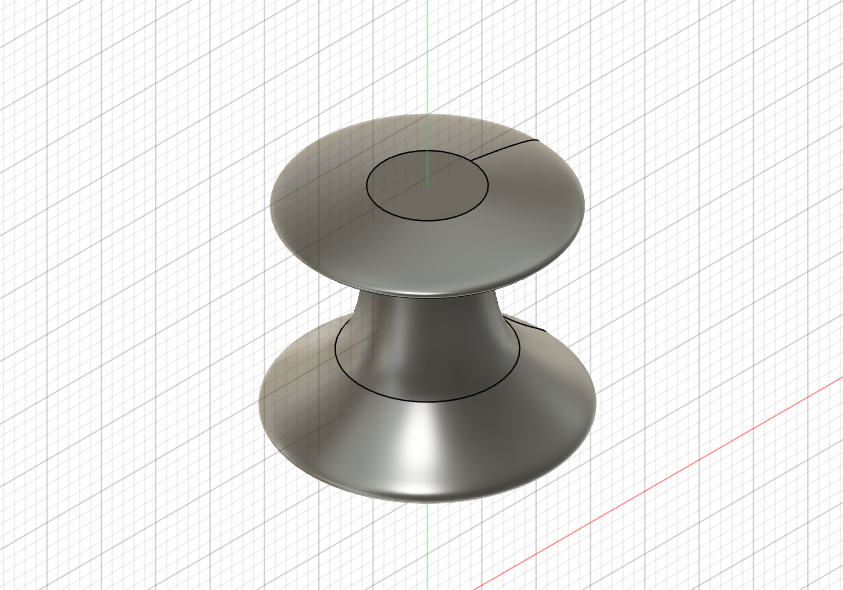
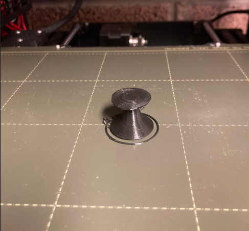
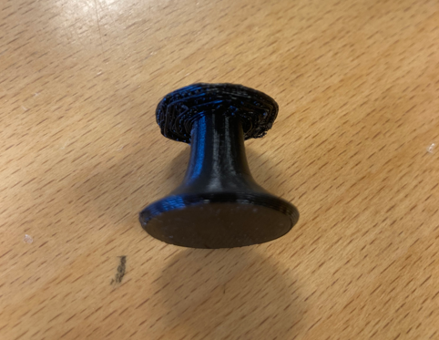
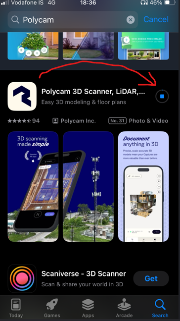

Step 3:
Before printing i needed to make some tests. Notebly the bit that comes out of the pawn, just underneath the head, was in an overhang and thus ran the risk of getting mangled in the printing process. to test this out I made a smaller version of the pawn without most the head and most of the foot that looked like this:


As you can see on the image, it came out a bit mangled as expected so for the printing of the whole pawn was decided to use supports. After importing the Pawn file to Prusa slicer i added in supports like this:


3D Scanning
Step 1:
First thing to do was to download the relevant software. From many previus student projects I had a general feeling that Polycam for iOS, was the best one as it allowed a 7-day free trial :). I searched Polycam on the Appstore and downloaded the app like this:

And after finding a spot with good room and lighting, I used the app and recorded the mouse from all angles. After a while of processing, Polycam gave me these results: